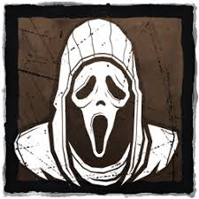
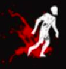
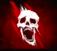
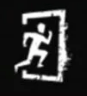

Originalmente, o jogo Dead by Daylight é jogado em um grupo de 4 sobreviventes e 1 assassino. O objetivo dos sobreviventes é consertar 5 geradores para liberar o portão e fugir do mapa enquanto fogem do assassino pulando janelas e derrubando palets para atrasá-lo. Enquanto isso, o objetivo do assassino é matar todos os sobreviventes, mas para isso ele precisa acertar cada sobrevivente duas vezes (a primeira vez para machucá-lo e a segunda para derrubá-lo no chão) e enganchar ele 3 vezes. Cada vez que um sobrevivente é enganchado ele deverá ser salvo por outro sobrevivente, caso contrário ele irá perder vida até morrer direto.
Porém, como este projeto é uma versão simplificada, algumas mecânicas foram adaptadas e existirá apenas um jogador.
Legendas:
: Palet aberta
: Palet fechada
: Janelas
: Gerador em progresso
: Gerador finalizado
: Portão

: Assassino
: Sobrevivente saudável

: Sobrevivente ferido

: Sobrevivente morto

: Sobrevivente que escapou
Controles:
A, S, D, W:
movimentar-se pelo mapa. (não é preciso ficar segurando a tecla para o personagem andar, basta apertar para mudar a direção dele, pois ele já se movimenta sozinho até parar em uma parede).
E:
realizar ação. (só é possível realizar ações de reparar o gerador ou derrubar uma palet quando estiver ao lado de um desses objetos).
Como jogar:
Quando o jogo começar, o assassino irá sumir do mapa, indicando que você não está no campo de visão dele e irá andar aleatoriamente pelo mapa. Quando ele ficar visível significa que ele te viu e está indo atrás de você utilizando o algorítmo de Dijkstra. Porém, se você já tiver iniciado algum gerador ele irá decidir se é melhor te perseguir ou sabotar o gerador que já está em progresso.
Enquanto isso, você deve conseguir fugir dele derrubando palets e pulando janelas, e completar os 5 geradores que tem no mapa. Se o assassino te alcançar não se preocupe, você apenas ficará machucado e ele irá para outro ponto do mapa. Porém, se ele te alcançar novamente você irá morrer e o jogo será finalizado.
Para fazer os geradores você apenas precisa ficar parado ao lado dele e apertar o botão de realizar uma ação (E).
Quando os 5 geradores forem concluídos o portão será aberto automaticamente, basta fugir por ele que você irá vencer.